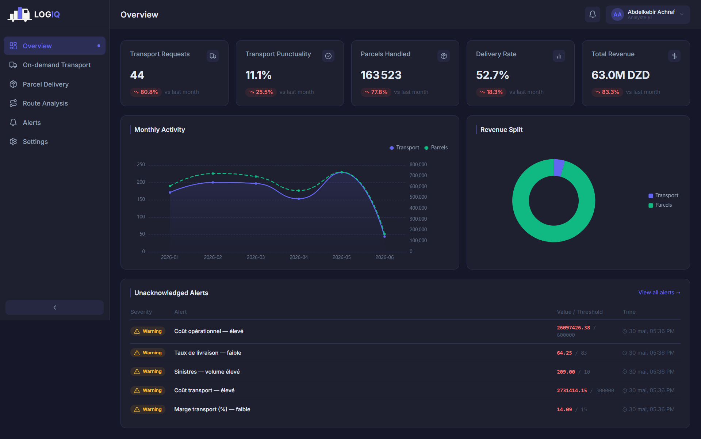

LOGIQ¶


Turning scattered logistics data into reliable, proactive decisions.
LOGIQ (Logistics + IQ) is a Business Intelligence decision-support system built for one of Algeria's leading express-delivery operators. It brings data scattered across several operational applications into a single data warehouse. An automated ETL pipeline keeps that warehouse current. On top of it, LOGIQ adds interactive dashboards, proactive alerts and a conversational AI assistant, so that managers decide on evidence rather than intuition.
It covers two business axes — on-demand dedicated transport and parcel delivery — each read through the same three views: Operations, Cost & Profitability and Performance.

At a glance¶
| Business axes | 2 — on-demand dedicated transport (Must have) and parcel delivery (Should have) |
| Views per axis | 3 — Operations · Cost & Profitability · Performance |
| KPIs | 30 — five per view, per axis, each backed by a drill-down data table |
| Source systems integrated | 5 operational applications, consumed through 18 REST endpoints |
| Data warehouse | 18 staging tables · 55 dimensions · 7 fact tables · 5 aggregate materialised views |
| Schema | Fact constellation with snowflaked, conformed dimensions; SCD Type 2 history |
| Data refresh | Automatic, daily at 01:00 UTC — incremental, idempotent and observable |
| Test scale | ≈ 13.0 M parcels and ≈ 30.5 M parcel-status events (synthetic, production-scale) |
| Warehouse integrity audit | 100 % coverage between layers, 0 violations on SCD2 and business-rule checks |
| Access control | 5 default roles, view-level RBAC, users provisioned from the company HR system |
| Interface | Arabic (right-to-left), French and English · light and dark themes |
| Specification | 12 functional and 19 technical specifications (ISO/IEC 25010) |
| Stack | Open-source data and application stack (PostgreSQL, Dagster, Django, Celery, Next.js), fully containerised |
| Deployment | One Docker Compose stack on a single modest VPS (2 vCPU, 8 GB RAM) |
| Timeline | October 2025 – June 2026 |
About the figures on this site
The production systems could not be connected during the project, so the platform was validated against a faithful simulation of the source systems fed with synthetic, business-realistic data. Every number visible in a screenshot comes from that test dataset, not from real company activity.
Explore¶
-
The organisations, the two business services, the diagnosis of the existing situation and the prioritised objectives.
-
Functional and technical specifications, global architecture, technology stack, security and deployment.
-
Four layers, a fact constellation of 7 facts and 55 dimensions, and the modelling techniques behind it.
-
An asset-oriented, incremental and idempotent pipeline orchestrated with Dagster.
-
Two axes × three views, 30 KPIs, threshold-based alerts delivered in-app and by e-mail.
-
Ask a question in plain language, get the figures or a chart — read-only and role-aware.
-
Simulated sources, a data-quality gate, an end-to-end run and a warehouse-integrity audit.
-
Limitations, contributions and the road ahead — starting with route analysis.
See also the Glossary for the BI and data-modelling terms used throughout.
Credits¶
LOGIQ was designed and built by Achraf Abdelkebir as a final-year project for the State Engineer diploma in Computer Science at the École nationale Supérieure d'Informatique (ESI), Algiers — option Information Systems and Technologies (SIT), class of 2025/2026.
- Host organisation: Ourquilane — Algerian software company that carried the project.
- Client: Yalidine El Djazair Services (Yalidine Express) — express-delivery operator for which the platform was built.
- Supervisors: Mr. Mohamed Amir Abbas (ESI) and Mrs. Yasmine Rihane (Ourquilane).
No source code here
This site is a project showcase. It contains no source code, credentials or real client data.